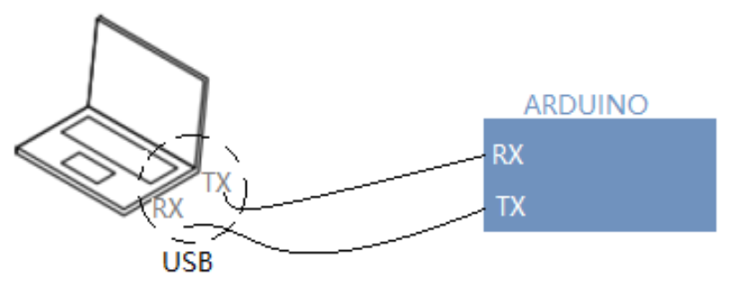
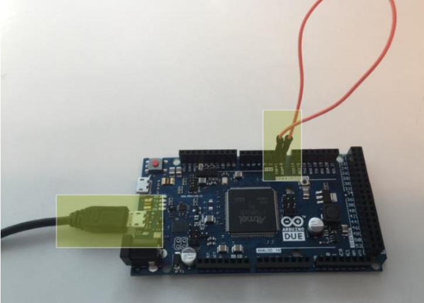
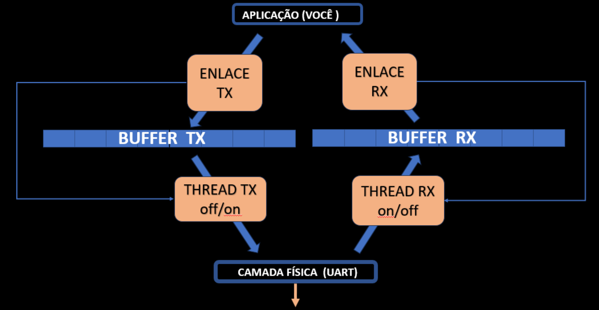

Projeto 1 – Loop Back
Baixar os arquivos do projeto 1
Neste projeto, você deverá construir um código em Python para transmissão e recepção serial simultâneas.
O software funcionará como camada intermediária entre o usuário e o chip UART, sequenciando os bits de cada byte de acordo com o protocolo.
Você utilizará 5 arquivos fornecidos e deverá editar apenas o arquivo aplicação.py.
Os demais arquivos já estão prontos para enviar bytes ao chip UART e receber dados.
Objetivo
Ao rodar seu arquivo aplicação.py, o software deve:
- Enviar uma imagem (o menor tamanho possível) através da porta de comunicação serial.
- Receber a imagem simultaneamente ao envio e salvá-la como uma cópia.
- Para isso, o pino RX do Arduino deve estar curto-circuitado com o pino TX.
- Compreender o código-base de transmissão UART.
Material Necessário
- Arduino
- Computador
- 5 arquivos de código fornecidos pelo professor
- No console Python:
- Verificar no Gerenciador de Dispositivos qual porta COM está o Arduino e ajustar no
aplicação.py.
Montagem do Sistema

- Ao conectar o Arduino ao computador:
- TX do computador → RX do Arduino
- TX do Arduino → RX do computador
- Para criar o loopback:
- Conecte o pino TX do Arduino ao pino RX do próprio Arduino.
- Alguns Arduinos (UNO) precisam:
- Ficar com o botão RESET pressionado
- Ou pino RESET aterrado.

Funcionamento Esperado
- Enviar uma sequência de bytes ou bytearray para o RX do Arduino
- Receber a mesma sequência de bytes de volta no computador (espelho)
- O envio e recepção acontecem full-duplex.
Estrutura da Camada Enlace
O maior desafio é compreender como as funções das classes realizam o envio e recepção full-duplex.

Você deve: - Seguir o fluxo das funções no envio e no recebimento. - Entender e ser capaz de modificar essas funções. - Trabalhar com imagem em Python: - Converter imagem → lista de bytes - Receber lista de bytes → salvar como imagem
Exemplo de Fluxo para Imagens
- Definir caminho da imagem.
- Ler imagem e converter para
bytearray. - Enviar via porta serial.
- Receber os bytes.
- Salvar como arquivo cópia.
- Verificar se abre corretamente.
Critérios de Avaliação
| Conceito | Descrição |
|---|---|
| C | Mostrar a transmissão e recepção da imagem ocorrendo corretamente. |
| B | Atender o conceito C e responder perguntas sobre as funções: getBufferLen, getAllBuffer, getBuffer, getNData, sendBuffer. |
| B+ | Atender os conceitos C e B, além de explicar os todos os termos da comunicação UART (veja tabela abaixo). |
| A+ | Atender todos os conceitos anteriores e corrigir a função getStatus para que funcione corretamente. |
Termos da Comunicação UART
| # | Termo |
|---|---|
| 1 | Transmissão assíncrona |
| 2 | UART – Start bit |
| 3 | UART – Stop bit |
| 4 | UART – TX, RX, GND |
| 5 | UART – Baud rate |
| 6 | UART – Bit rate |
| 7 | UART – Buffer |
| 8 | UART – Frame |
| 9 | Bit de Paridade |
| 10 | CRC |
Entrega
- Avaliação presencial: você e sua dupla apresentarão o projeto para o professor, que fará perguntas.
- A apresentação deve ocorrer até a próxima semana.
- Após esta data, há redução de 25% da nota por semana de atraso.